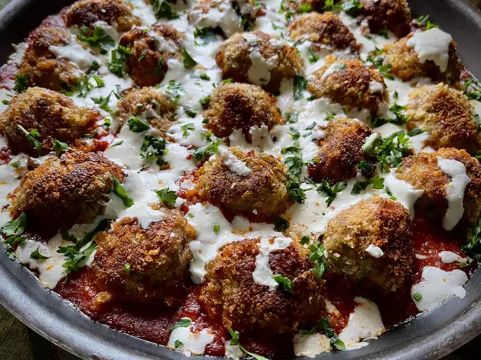

Recipe Information
- Prep Time: 20 minutes
- Cook Time: 40 minutes
- Total Time: 1 hour
- Servings: 162
Nutritional Facts
(per serving)
- 836 Calories
- 26g Fat
- 135g Carbs
- 24g Protein
Ingredients
- 1 large egg, beaten
- ¾ cup grated Parmesan cheese
- 1 ¾ cups Italian-style panko bread crumbs, divided
- 1 teaspoon garlic powder
- 1 teaspoon Italian seasoning
- ¾ teaspoon crushed red pepper flakes
- ½ teaspoon salt
- ½ teaspoon freshly ground black pepper
- 1 ½ pounds ground chicken
- 2 tablespoons olive oil, divided
- 2 tablespoons unsalted butter, divided
- 1 (28 ounce) jar marinara sauce
- ½ cup shredded mozzarella cheese
- 2 tablespoons snipped fresh parsley (Optional)
Directions
- Stir egg, grated Parmesan cheese, 3/4 cup panko crumbs, garlic powder, Italian herb seasoning blend, crushed red pepper,
salt, and black pepper together in a large bowl
- Put on a pair of food-grade disposable gloves, add chicken to the bowl, and mix with your hands until all the ingredients
are well combined
- Place remaining 1 cup panko crumbs on a plate. Using a 1-1/2-inch scoop, create about 24 meatballs. Gently roll each meatball
in crumbs until lightly coated; set aside on a plate
- Preheat oven to 350 degrees F (175 degrees C)
- Place 1 tablespoon olive oil and 1 tablespoon butter in a large, oven-proof skillet over medium heat. Add half the meatballs
and brown each side, turning until all sides are browned. Set this batch on a plate, and wipe the skillet clean
- Repeat with reserved oil and butter, and cook the remaining meatballs in the same way
- Wipe out the skillet again, and pour in marinara sauce. Place browned meatballs in sauce. They will not be submerged
- Bake in the preheated oven for 25 minutes. Sprinkle on shredded mozzarella and return to the oven for an additional 5 minutes,
or until the cheese is melted. Sprinkle with fresh parsley
Return to top
Return to main page